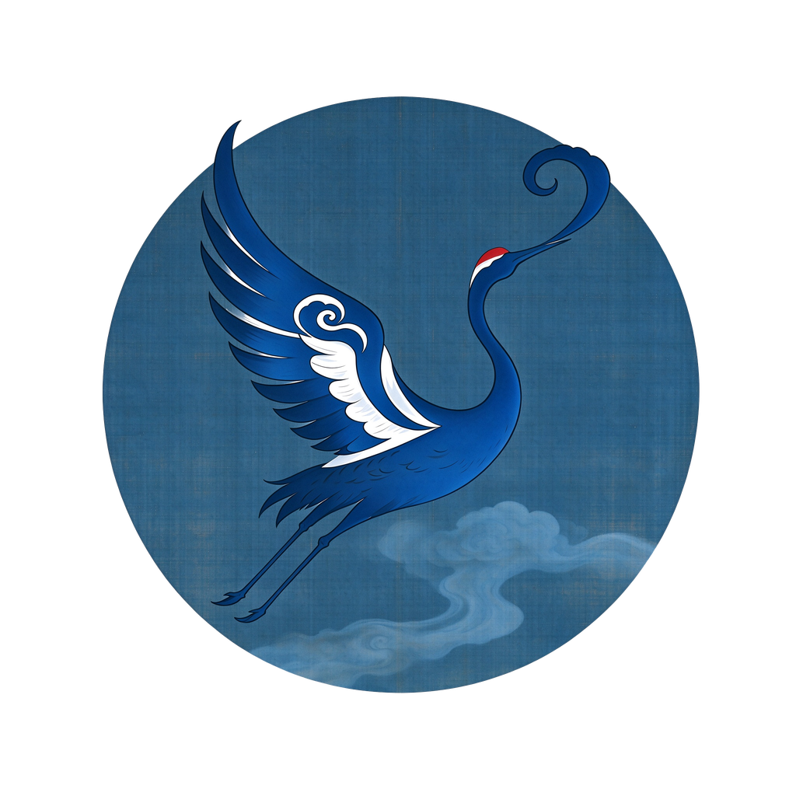
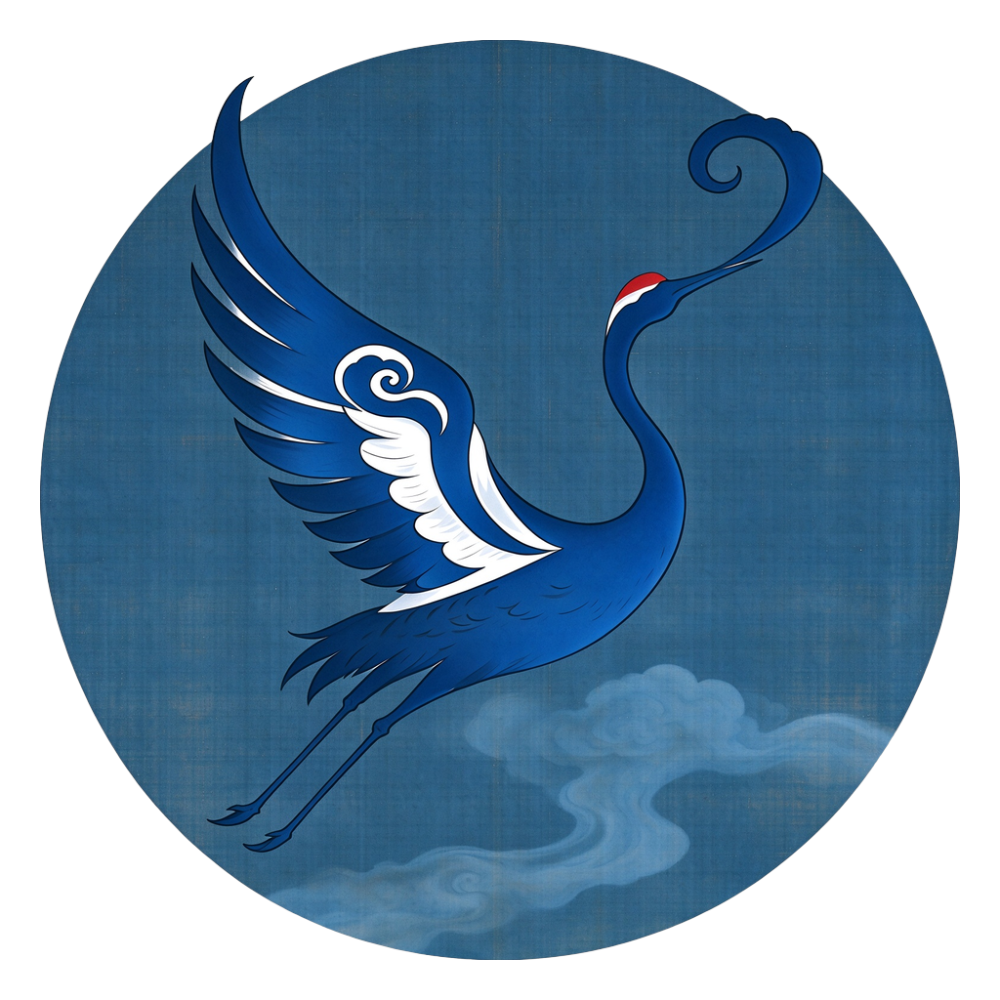
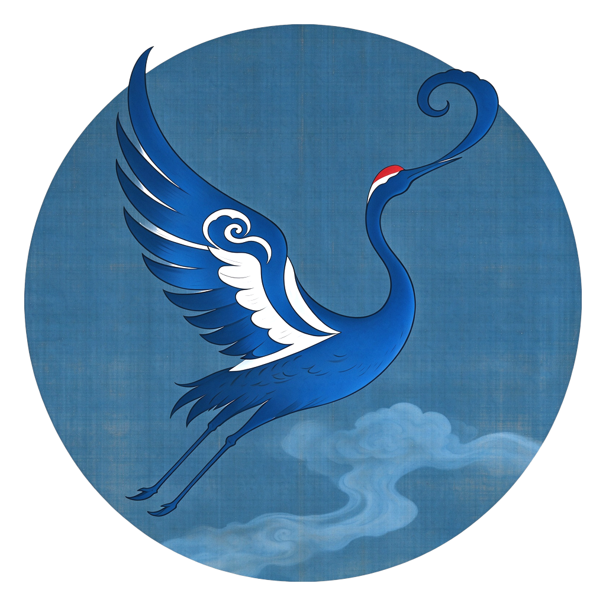
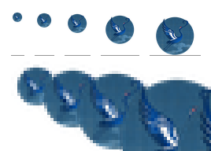
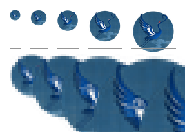
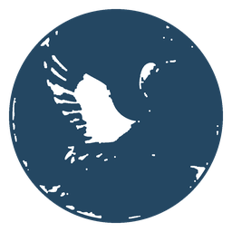
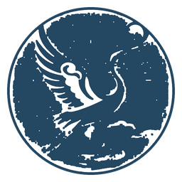

APP图标Logo设计 (2).png（2048×2048 RGBA）· 全程像素级处理，原图未被修改 · 输出目录：assets\icon\| 问题 | 实测数据 | 后果 / 处理办法 |
|---|---|---|
| 1. 圆形在画布里偏小 （最严重） |
圆直径 1535 / 2048 = 75.0% 四周各空出约 12.5% |
Windows 不会帮你补这部分空白，所以放在任务栏 / 资源管理器里，它会肉眼可见地比旁边的应用图标小一圈。这是本次唯一建议动的地方：把圆放大到画布 92%（留 4% 呼吸位），图形本身一个像素都不改。 |
| 2. 整体偏暗 | 不透明区亮度中位数 83/255 接近白色像素仅占 2% |
缩到 16~32px 时会糊成一团深蓝。可选处理：明度小幅拉伸（+10 亮度 / ×1.10 增益，不换色相、不动形体）——见 A2，你决定要不要。 |
| 3. 绢纹颗粒偏重 | 背景区逐通道标准差 ±15 （对 2048 原图 3×3 中值差均值 1.91） |
大尺寸很有味道，但 16/20/24px 会变成脏脏的斑块。解决办法不是删掉它，而是小尺寸换用简化版（见第三节）。 |
| 4. 圆形边缘几乎没有抗锯齿 | 沿 y=1024 扫描：alpha 从 0 直接跳到 255 中间只有 1 个过渡像素 |
2048 原图上看不出来，但任何劣质缩放都会让边缘出现台阶。我的处理链路全程用 LANCZOS 重采样，此项无需你操心，只是说明它已在我的注意范围内。 |





为 Windows 的 16 / 20 / 24px 做的简化版。我用自适应背景模型（扣除绢纹渐变后再提取笔触）自动抠出鹤形，得到三个不同"胖瘦"的结果。这三个里肯定有一个最接近你心里那只鹤，也可能都不像——因为这是自动抠图，请务必用肉眼验收：


需要你回三件事：
三点确认后，我才生成最终交付件：app.ico（16/20/24/32/40/48/64/96/256）+ 1024 PNG 母版 + 简化版 16/32/48 PNG，全部放进 assets\icon\。
在你点头之前，你的原图和任何文件都不会被改动。